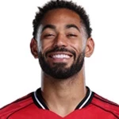

Brazílie na MS 2026: konec v osmifinále a další zklamání
Mundial pro Brazílii skončil v osmifinále: 1:2 s Norskem 5. července, dva góly dal Haaland. Poprvé od roku 1990 jede Seleção domů před čtvrtfinále.

Jak turnaj skončil
Mundial pro Brazílii skončil v osmifinále: 1:2 s Norskem 5. července, dva góly dal Haaland. Poprvé od roku 1990 jede Seleção domů před čtvrtfinále.
Brazílie na MS 2026: přehled
Cesta turnajem skončila v osmifinále.
Klíčoví hráči
Hráči podle výkonu a odehraných minut.




Brazílie: zápasy na MS 2026
Dosavadní průběh turnaje — 3 výher, 1 remíz a 1 proher.
2026
 NorvegiaDomácí
NorvegiaDomácí2026
 GiapponeDomácí
GiapponeDomácí2026
 ScoziaHosté
ScoziaHosté2026
 HaitiDomácí
HaitiDomácí2026
 MaroccoDomácí
MaroccoDomácíSilné a slabé stránky
Silné stránky. Skupina přitom vypadala slibně: hluboký útok, Vinícius se 4 góly a jediná obdržená branka v prvních čtyřech zápasech.
Slabé stránky. Znovu ta samá bolest — velké večery. Na fyzičnost a brejky Norska tým Ancelottiho nenašel odpověď.
Klíčoví hráči týmu
Pod vedením trenéra Carlo Ancelotti jsou klíčovými hráči Vinícius Júnior, Raphinha, Neymar.
Historie na MS
Pět titulů — absolutní rekord: 1958, 1962, 1970, 1994 a 2002. Vyřazení v osmifinále 2026 je nejhorší výsledek od roku 1990.
Bilance turnaje
Pro tuhle edici je rozhodnuto: Neymarova penalta v závěru — první gól za reprezentaci po třech letech — porážku jen osladila. Nový pokus až v roce 2030.
 Španělsko · kurz 1,67
Španělsko · kurz 1,67Ostatní favorité


Časté dotazy
Proč Brazílie vypadla z MS 2026?
V osmifinále prohrála 1:2 s Norskem — rozhodl dvěma góly Haaland.
Kdy naposledy Brazílie chyběla ve čtvrtfinále?
Před rokem 2026 to bylo naposledy v roce 1990.
Dal Neymar na MS 2026 gól?
Ano, penaltu v závěru osmifinále — první gól za reprezentaci po třech letech.
Kdo je trenérem Brazílie?
Carlo Ancelotti.
Kanárci jsou věčným favoritem, ať se hraje kdekoliv. Jenže tentokrát je po nadějích dřív, než se turnaj vůbec rozjel do finiše: Seleção vypadla 5. července v osmifinále, když na MetLife Stadium podlehla Norsku 1:2. Poprvé od roku 1990 chybí pětinásobný mistr světa ve čtvrtfinále mistrovství světa. Pojďme si projít, jak k tomu došlo a co z toho plyne.
Patřila Brazílie mezi favority?
Ano – ale ne s takovým náskokem jako dřív. Sázkovky ji před turnajem držely v první čtyřce, hlava na hlavě s Francií, Anglií, Argentinou i Španělskem. A přesně tahle konkurence teď hraje semifinále, zatímco žlutí balí kufry. Zakopaný pes byl vidět už v nominaci: nejvíc individuální kvality z celého startovního pole, ale otazníky v organizaci hry, které se ve vyřazovačce nemilosrdně vybarvily.
Jak vypadala cesta turnajem
Skupina nebyla žádná hitparáda, ale postup zajistila:
- 1:1 s Marokem
- 3:0 s Haiti
- 3:0 se Skotskem
Ve dvaatřicítce Seleção udolala Japonsko 2:1 a vypadalo to, že se mašina konečně rozjíždí. Pak ale přišlo Norsko.
Osmifinále: Norsko 2:1 a konec
5. července, MetLife Stadium. Dva góly Erlinga Haalanda poslaly Nory do prvního čtvrtfinále v historii – a Brazílii domů. Neymar sice v závěru proměnil penaltu (jeho první gól za reprezentaci po třech letech), ale na obrat už nezbyl čas. Skóre turnaje 10:4 vypadá slušně, jenže góly proti Haiti a Skotsku ti čtvrtfinále nezaplatí.
Norsko následně ve čtvrtfinále vypadlo 1:2 s Anglií – slabá útěcha, ale aspoň důkaz, že žlutí nepadli s žádným otloukánkem.
Co se pokazilo
- Nervozita v koncovce turnaje – vyřazovací fáze byla v posledních letech jak zakletá a letos se scénář zopakoval. Sedmý šampionát v řadě bez titulu.
- Stabilita v obraně – při rychlých protiútocích vznikal chaos a Haaland je přesně ten typ útočníka, který to trestá.
- Tlak očekávání – doma berou cokoliv jiného než finále jako fiasko. Vypadnutí v osmifinále je nejhorší výsledek za 36 let.
Světlé momenty? Vinícius Júnior se čtyřmi góly patřil ke střelecké špičce skupinové fáze a mladé jádro získalo zkušenost, která se bude hodit v roce 2030.
Kurzy: trh je uzavřený
S vyřazením se outright trh na brazilský titul zavřel – sázet na Seleção už na tomhle šampionátu nejde. Kdo držel ante-post tiket na zlato, má po nadějích; sázky na postup ze skupiny se vyplatily.
Turnaj ale běží dál a s ním i trhy na zbylou čtyřku: Francie (2.49), Španělsko (4.30), Anglie (4.37) a Argentina (5.63). Jihoamerickou vlajku drží ve hře právě Albiceleste – pro fanoušky žluté je to asi nejpřirozenější náhradní tiket.
Co dál pro Seleção
Přestavba. Debata o trenérovi se rozjede naplno, generační výměna dostane nový impuls a cíl je jasný: MS 2030. Jádro kolem Viníciuse bude v ideálním fotbalovém věku a tahle porážka může být paradoxně užitečnější než další čtvrtfinálové trápení – donutí federaci řešit systém, ne jen jména.
Tip: co s tím jako sázkař?
Brazílie je mimo hru, takže jediná rozumná rada zní: přesměruj pozornost na semifinále. Francie–Španělsko 14. července a Argentina–Anglie 15. července nabízejí čtyři jasně čitelné příběhy a finále 19. července na MetLife – shodou okolností na stadionu, kde brazilský sen skončil.
A pamatuj: sázej s rozumem a jen to, co si můžeš dovolit prohrát. Hazard není bankomat – ani když hraje žlutá.